Two products wearing one name.
Most renting apps are built for the person looking. Abode had to work for the person letting too — which meant designing two journeys that share a brand, a database and a design system, but almost nothing else.
- Role
- Product design, UI
- Platform
- Mobile · 390 × 844
- Scope
- 68 screens, two sides
- Status
- Concept prototype
01 — The problem
An agent in the middle of a basic need.
Renting in Nigeria usually starts with a fee paid to someone who does not own the property and may not have seen it recently. The tenant carries the risk: an inaccurate listing, an unreachable landlord, cash handed over with nothing to show for it.
The product decision that shaped everything else was to verify both sides and keep the record in the app — identity, lease and payment. Remove the agent, and the app absorbs the work the agent was being paid for.
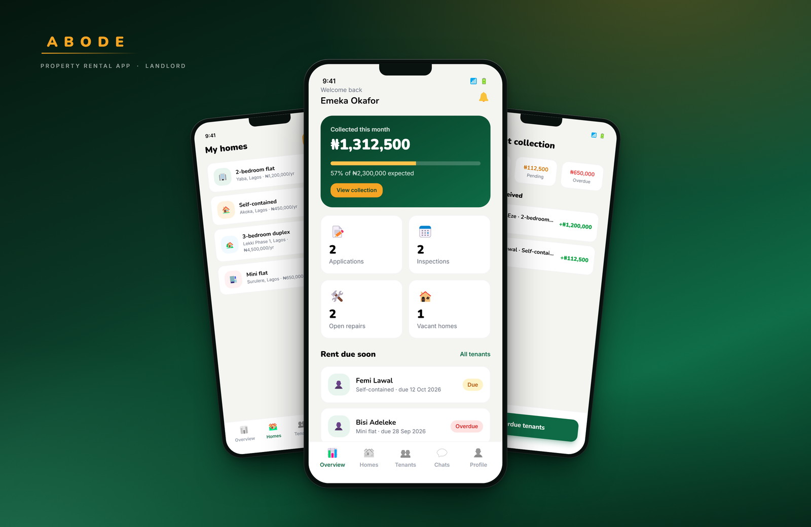
02 — Structure
Ask once, then get out of the way.
The first real screen is a role choice. From there each side gets its own tab bar and its own home, because a tenant opens the app to find a home and a landlord opens it to manage one. Sharing a dashboard between those two intents would have made both worse.
What is shared: verification, the lease, rent, repairs and ratings. A payment made by a tenant is the same object a landlord sees in their collection screen — one record, two views.
- 01Verify onceNIN and BVN identity checks sit before the marketplace, so every listing and every application is attached to a real person.
- 02One leaseSigned in the app by both sides, with the same document and dates visible to tenant and landlord.
- 03One payment recordEvery instalment produces a receipt for the tenant and a line in the landlord's collection view.
03 — Tenant journey
From searching to sleeping there.
Six steps, each with a screen pair: what the tenant sees, and the state that follows. The sequence stays linear on purpose — renting has a beginning and an end, and the interface should not pretend otherwise.
Find a home
Browse by area and budget, then narrow with filters that survive a return visit.


Judge the listing
Photos, price, what is included — and who the landlord is, before any contact.
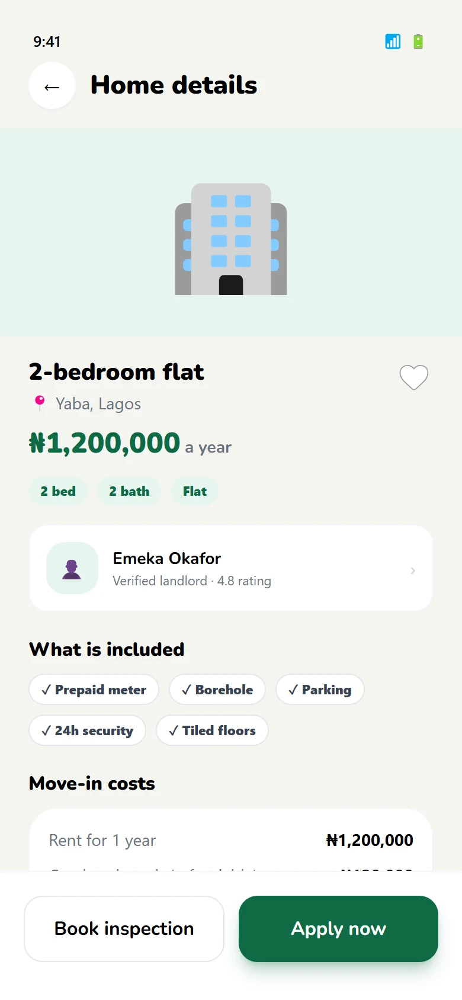

See it, then apply
Book a slot instead of calling, then apply with the details already on file.
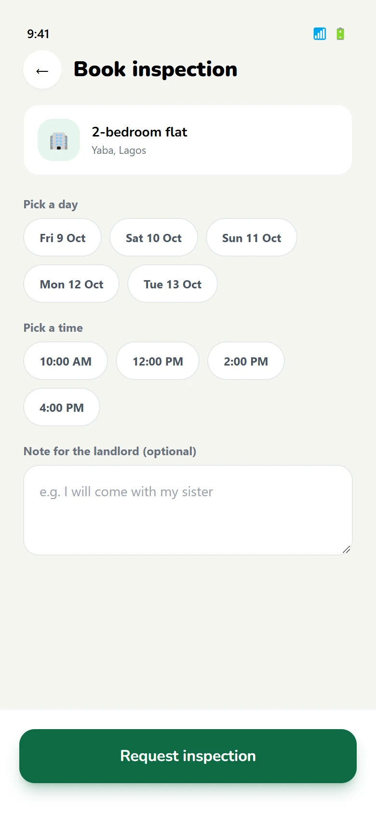
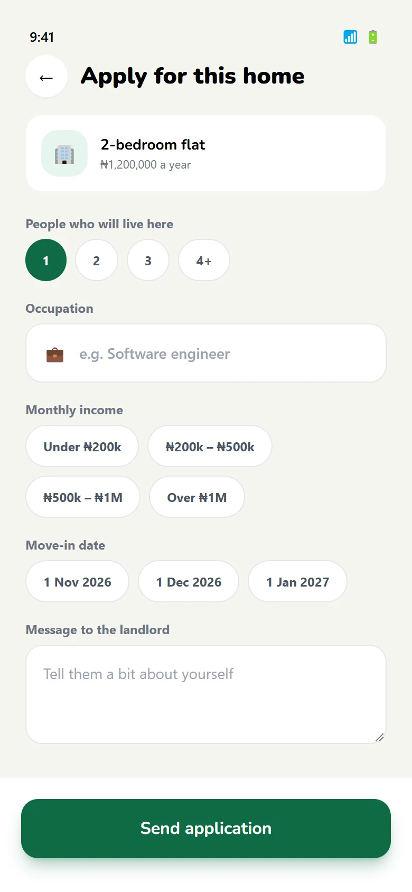
Sign the lease
The agreement is read and signed in-app; the home screen changes to reflect it.

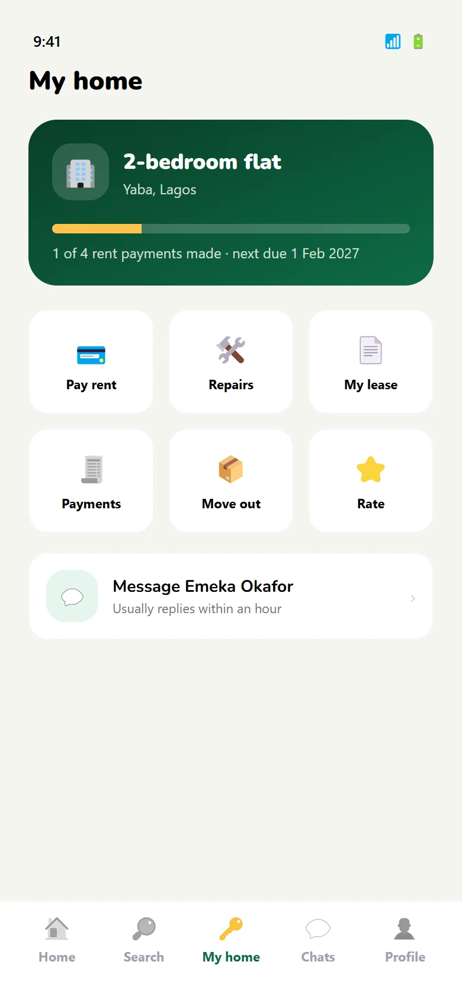
Choose a plan
Yearly, quarterly or monthly — with a receipt that can be produced later.

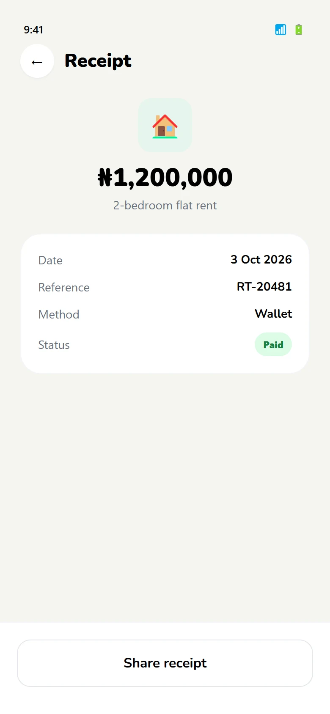
Stay, or leave cleanly
Repairs are raised in the app, and a move-out notice is a formal step rather than a text message.
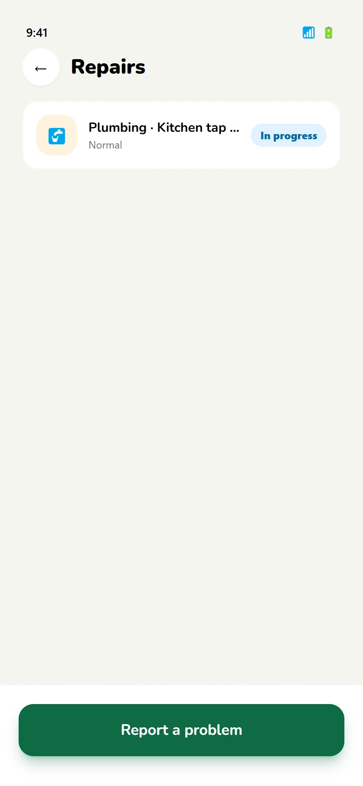
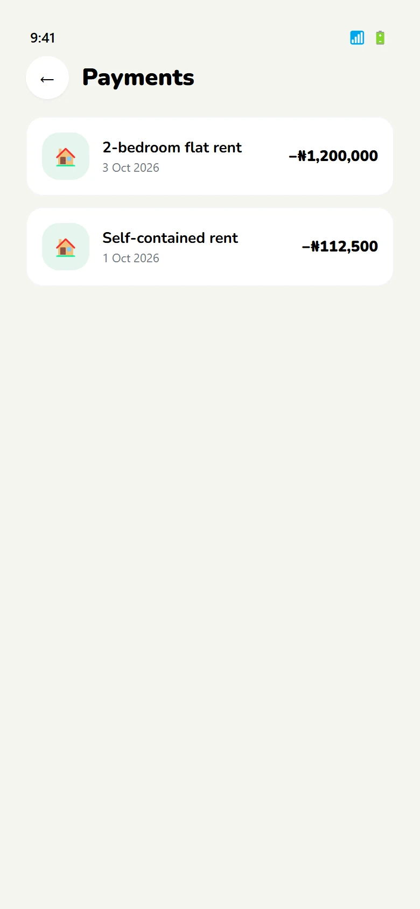
04 — Landlord journey
The side that decides whether it works.
A tenant can abandon a search. A landlord who cannot list, screen or get paid has no reason to stay — so this half is built around three jobs, not a feed.
Four steps to live
Property, rent, photographs, publish. One progress bar for the whole task.
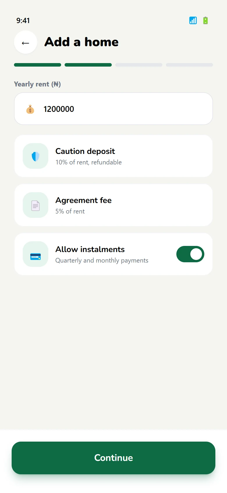
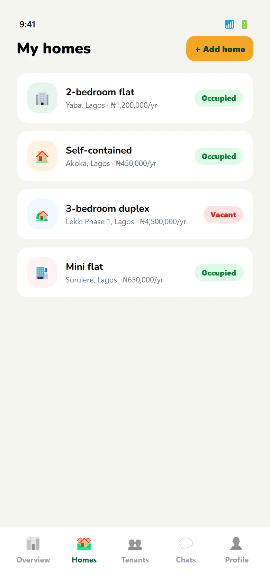
Choose a tenant
Applications arrive verified, so the decision is about fit rather than paperwork.
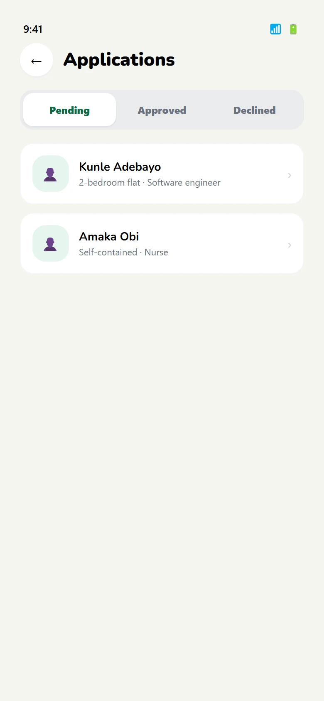
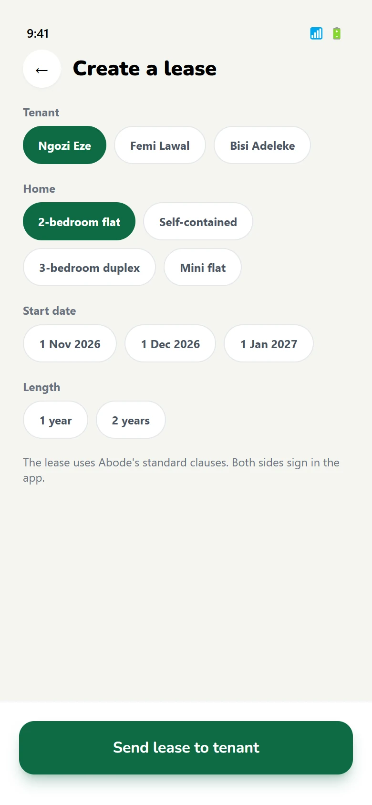
Get paid, move it out
Rent lands against the tenancy; earnings can be withdrawn to a bank account.

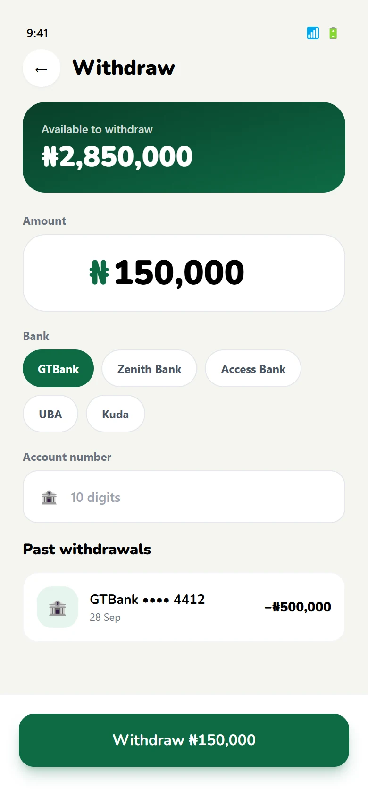
05 — The system
One palette for two audiences.
The tenant side needs warmth and reassurance; the landlord side needs clarity and numbers. Rather than two brands, the palette does the work: deep green for trust, navy for text and structure, amber only where money is involved.
Rent paid. Receipt saved.
Verify your identity once, then apply to any home on Abode.
4 / 8 / 12 / 16 / 24 / 32
Sixty-eight screens, one prototype.
The full flow is clickable in Figma, tenant side and landlord side.